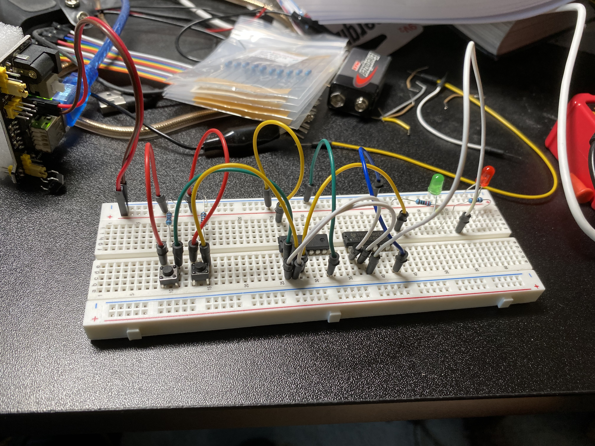

Half-adder implementation using logic gates
One of my habits is playing around with some low-lever stuff, which is really interesting if you could build some components on your own.
In this project, I implement a half-adder (containing two inputs compared, which is usually used in least significant bit addition) using bread board, transistor, 7408 IC (contains four AND gates), 7486 IC (contains four XOR gates)
The following pic and truth table show the idea, where the green LED represents the sum bit while the red LED represents the carry bit. If eigher input is true (when press the button), the green LED will light up; while when both inputs are true, the red LED will be lit (means there's a carry-out)
| Input: a | | Input: b | | Output: sum bit (green LED) | | Output: carry bit (red LED) |
|---|---|---|---|
| 0 | 0 | 0 | 0 |
| 0 | 1 | 1 | 0 |
| 1 | 0 | 1 | 0 |
| 1 | 1 | 0 | 1 |
The following video shows the real-time presentation.